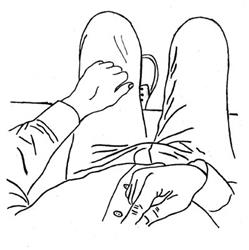

My friend and teacher, Douglas Harding, used to say that before we see who we really are, we read the scriptures to see if we have got it right (‘it’ being our own spiritual experience), but after we see who we really are, we read the scriptures to see if they have got it right! Making the point that true spirituality is concerned with the question of our fundamental identity, he was emphasizing that ultimately only I am the authority on what it’s like to be me, and only you are the authority on what it’s like to be you. Scriptures can be useful guides-on-the-side, but their validity should be measured against our experience, not the other way round.
In this post, I invite you to exercise your own authority by seeing for yourself if some of the masters got it right. My proposal is that we test a few of their assertions by using some of what Harding called ‘experiments.’ Harding claimed that basic truths about our essential nature are as observable and verifiable as physical truths. If the sages claim that we are one with all things yet at the same time empty of all things, for example, or that we are infinite, or perfectly still, then we shouldn’t have to take those ideas on trust but should be able to verify them for ourselves, just as we shouldn’t have to take on trust the idea that a heavy object drops at the same speed as a light one. In both cases, spiritual no less than physical, we should be able to test the propositions for ourselves.
One objection to Harding’s premise is that testing how fast two objects of different weights fall is easy to do—you can try it with a penny and a quarter—but determining if we are one with all things is incredibly difficult. The Buddha, for example, uniquely gifted and motivated as he was, nevertheless spent years, indeed, lifetimes preparing himself for the supreme moment of self-realization. We are not the Buddha—so goes the objection—and it would be both incredibly presumptuous and a huge mistake to believe that we are at this very moment and in this very place poised for enlightenment.
There are two answers to this objection. First, how do we know we are not ready for self-realization? If it does take many lifetimes to reach readiness, isn’t it possible that we have in fact already spent those lifetimes (but have simply forgotten them) doing all the things necessary to prime us for the supreme moment? Our penny might be just about to drop. It’s worth taking a few minutes to look at who we really are, just in case, isn’t it? What can we lose?
The second answer is even more radical. It is simply the claim that self-realization is easy, no matter who we are or how prepared we might or might not be. This brings us conveniently to the first of the assertions by spiritual masters which I am proposing we test. Ramana Maharshi, the preeminent twentieth-century Hindu authority on self-inquiry, said: “It is easier to see who you are than to see a gooseberry in the palm of your hand.” What could be easier than seeing a gooseberry—or the equivalent ordinary piece of fruit, depending on where you live—in the palm of your hand? Just about nothing.
Was Ramana right? Let’s see by doing one of Harding’s experiments. Please:
Nothing could be easier than that, right?
Of course, I’m not asking you to imagine that if you pointed at your head you would see its/your absence. I’m asking you to take the time and make the effort (little as it is) to actually look. You know the analogy about the difference between reading the menu and eating the meal or between looking at a brochure on Hawaiian vacations and spending two weeks lying on white sand beaches sipping margaritas (I mean, juice…)? It’s true of the experiments, too. Just reading about pointing at your absence—taking it on trust or imagination—is nowhere near the same as actually seeing the absence of your head. It’s the looking that matters, not the idea or the image. So if you didn’t actually point and look before, perhaps you could do so now. There isn’t really much value in reading this essay without testing for yourself the propositions put forward in it.
You may be thinking, though, that I am confusing our inability to see our heads directly, due to our being inside them, with the perception of their actual absence. In other words, the absence we see isn’t a real absence but is merely a physical blind spot. We have all got heads here where we are; we are just in the wrong position to see them.
In addressing this reservation, it’s useful to distinguish between ourselves as others see us and ourselves as we see us. When we imagine ourselves as others see us (or when we look in the mirror, which is in principle the same thing), we obviously have heads. This is the outside, third-person, indirect view of us—the view from there—and as such it is perfectly valid. But it is not the only view. We can also see the inside, first-person, direct view of us—the view from here, which reveals quite clearly the head’s absence—and this view is perfectly valid, too. It seems invalid only if we have already prejudged the issue by assuming that the outside view is the only real view and that if we could only actually see ourselves, we would see ourselves only as others see us: topped off with heads.
From the first-person point of view, however, the assumption that we are in a blind spot when it comes to seeing ourselves is itself the real blind spot. Zen master Huang-po is very clear about this. Referring to the direct vision of absence, he states unambiguously: “It is that which you see before you; begin to reason about it, and you at once fall into error.” When we reason about it—when we apply to our lives the faulty assumption that we cannot see ourselves directly and that only others have the legitimate view, which we can only imagine secondhand—we make the huge mistake of turning a blind eye to the bona fide vision of our absence that is staring us in the face.
In one of his talks, Zen master Ta-hui described this vision of our absence thus: “It is vast and unobstructed, utterly empty.” Let’s do a bit more pointing to see if his description matches our experience—that is, to see whether or not he got it right.
So do you think Ta-hui got it right? (I’ll refrain from sounding condescending by adding, “Well done, Ta-hui!”)
Incidentally, the observation that we are a vast and unobstructed space is much like saying we are infinite. Rumi, being a poet, puts it like this: “In this house is a treasure which the universe is too small to hold.” Similarly, the Zen master Yung-chia Hsuan-chueh asserts that “Like the empty sky, It has no boundaries, yet It is right in this place, ever profound and clear.” And in almost the same words, the Zen master Yung-chia Ta-shih notes that “like space it knows no boundaries, yet it is even here, within us.”
Try this for a test of your infinite extent:
So, again, did the experts—in this case Rumi, Yung-chia Hsuan-chueh, and Yung-chia Ta-shih—get it right? Aren’t you without edges? Which is the same as asking, Aren’t you infinite?
But let’s make this project of testing the scriptures a bit more challenging (as if being empty and infinite were chickenfeed!). Let’s bring into the conversation the supreme scripture of Mahayana Buddhism, The Heart Sutra, which begins with the encomium, “Homage to the Perfection of Wisdom, the Lovely, the Holy!”, a clue that the sutra is about to impart the deepest of all spiritual truths.
According to the sutra, Avalokita, “The Holy Lord and Bodhisattva,” experiencing self-realization (or, as the sutra puts it, “moving in the deep course of the Wisdom which has gone beyond”), observes that “Here,…form is emptiness and the very emptiness is form; emptiness does not differ from form, form does not differ from emptiness; whatever is form, that is emptiness, whatever is emptiness, that is form...”
Is the Heart Sutra telling it like it is? That is, is it describing you? Let’s take a look.
Again, it’s up to you to say whether or not the supreme scripture of Mahayana Buddhism has got it right—that it is accurately describing what you look like to yourself.
We’ve just tested a number of propositions by spiritual experts: that self-realization is easy, that we are fundamentally empty, that the emptiness we are is infinite, and that this emptiness is also, paradoxically, form. We’ll tackle two more propositions, just for good measure.
The first follows from the theme of The Heart Sutra. If we are emptiness and if emptiness is form, then we are one with everything, including all human beings. Dogen, the founder of the Soto school of Zen, expresses the notion like this: “The true person is not anyone in particular. But like the deep blue color of the limitless sky, it is everyone, everywhere in the world.” Jesus had a more personal way of making the same point: “Wherever two or three are gathered together, there I am in the midst.”
Here’s the experiment designed to test the proposition that, seeing the absence of our head, we can also see that we are one with others.
When two or three—or more—are gathered together, there “I”—the emptiness, the space, the Self at the heart of every one of us—am. True or false?
You might find the final experiment rather fun, in a child-like sort of way. (“Child-like,” of course, is not the same as “child-ish.” Jesus said something about our becoming like little children if we want to enter the kingdom of heaven, and along the same lines, Lao-tzu, author of the Tao Te Ching, wrote: “The Sage sees and hears no more than an infant sees and hears.” We should perhaps bear this distinction in mind if the next experiment strikes us as purely childish.)
Spiritual experience is often associated with the image of inner stillness. T.S. Eliot writes about “the still point of the turning world,” claiming that “at the still point, there the dance is.” The Sufi poet Bayazid Bastami was even more explicit: “For a long time,” he said, “I used to circumambulate the Kaaba. When I attained God, I saw the Kaaba circumambulating me.”
Let’s see if these poets were on the right track. The question here is: Can we experience inner stillness here and now, easily, just by looking?
Before we see who we are, I suggest, we think or imagine that we move through a still world, but after we see who we are, we perceive the world moving through our stillness.
In concluding this post, I would like to address a final reservation: that while the experiments may be easy, the spiritual life is not, and it is misleading, if not dangerous, to suggest that it is.
There is a half-truth, or, rather, half the truth, in this view; the whole truth is a paradox. On the one hand, as we have seen, it is easy to see who we really are, right here and right now. In fact, it’s the easiest thing in the world. All we have to do is notice the absence of our head. And since the experience is always here and always now (never in the future), it is always easy to see who we really are; noticing that we are empty, infinite, one with all beings, and perfectly still is a breeze. On the other hand, remembering to see who we really are from moment to moment can be very challenging (though having friends to share this with helps—the experience is catching). It takes interest and effort to make awareness of our spaciousness our default state. Just as challenging, perhaps, is the job of figuring out intellectually how the inside view of ourselves fits with the outside view—I have touched only briefly on this project here; there is so much more that could be said. Most challenging, however, is the work of responding fully to the spiritual imperative to live and act from awareness of our spaciousness—to be self-realized in the fullest sense. What does it mean in practice in our relationships, for example, when, looking at another person, we find we are not face-to-face with them but space-to-face: room for them to happen in, as Harding put it? Rumi describes such a radical spiritual relationship thus: “His form [that is, our face] has passed away, he has become a mirror: naught is there but the image of another’s face.” This simple observation, so easy, so obvious, so accessible, nevertheless challenges our deepest assumptions about ourselves and others and dares us to relate and behave in ways fundamentally different from how the culture has trained us to relate and behave. “How wonderful is the path of Love,” wrote the Sufi poet Hafez, “when the headless one is exalted,” a task at once marvelously easy and unbelievably hard.
In sum, we should refrain, I propose, from immediately dismissing ‘the headless way’ as too facile to be credible; but we should also not deny its difficulties. Indeed, Harding once said that it is much easier to earn a million dollars—with inflation, that would be a billion dollars now—than to live fully from who we really are through all the vicissitudes of life. It may be easy to see the headless one (thank God!), but it is most challenging—and yet most rewarding—to live as that one: to test Hafez’s claim, and the claims of all the other experts regarding such profound spiritual matters as suffering, surrender, liberation, and immortality, in the crucible of who we really are.
We all have problems, and the spiritual life is, at least in part, meant to offer solutions to those problems. And so I will end with one last assertion by a spiritual master—Ramana Maharshi again—leaving it up to you to see whether or not he got it right.
“The answer to your problem is to see who has it.”